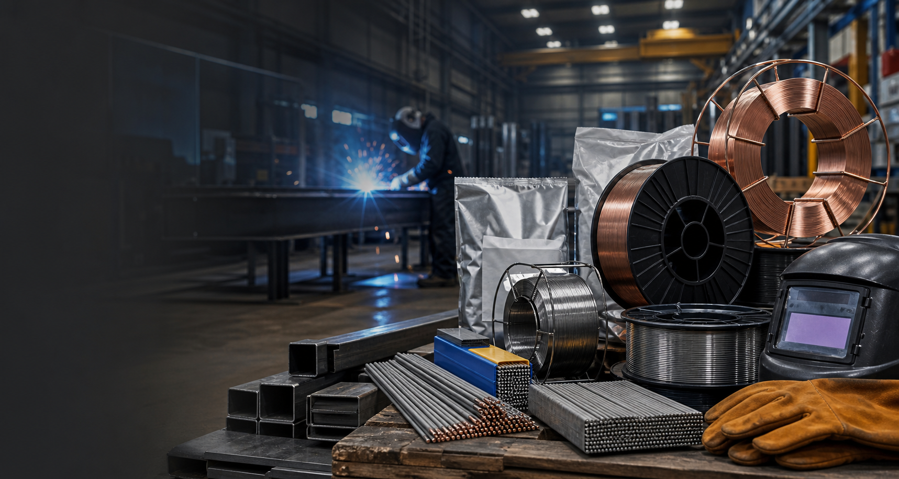
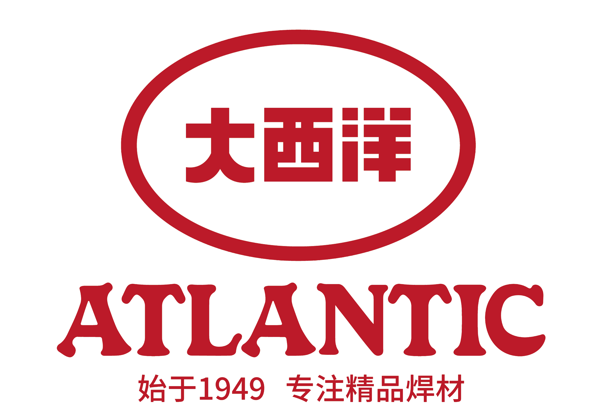
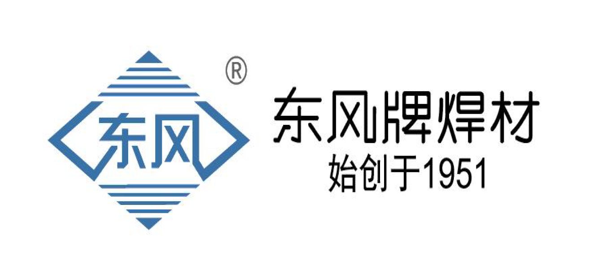
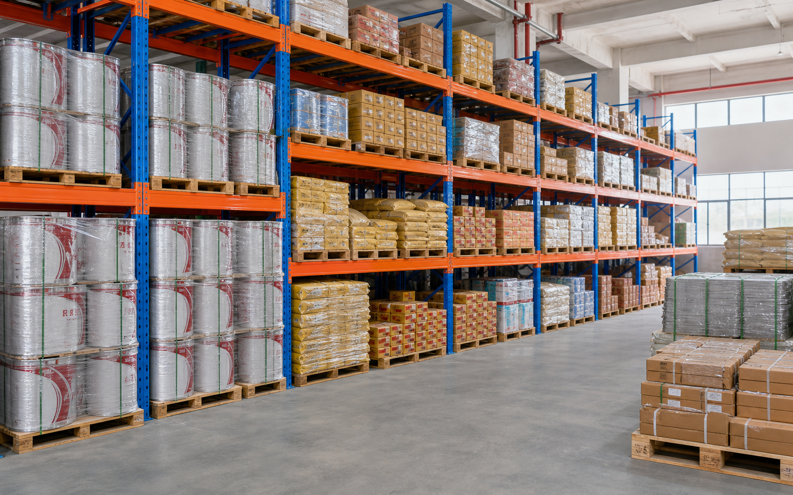
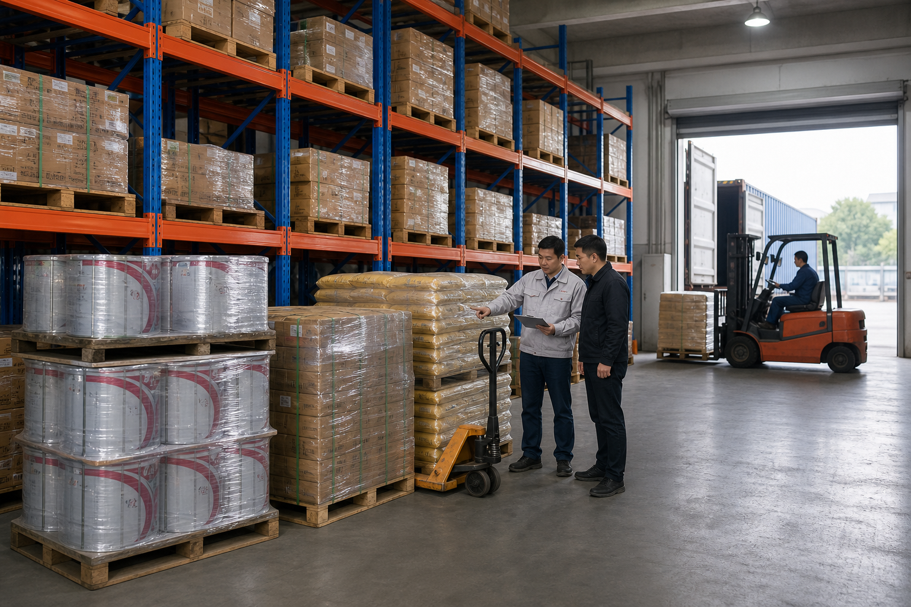
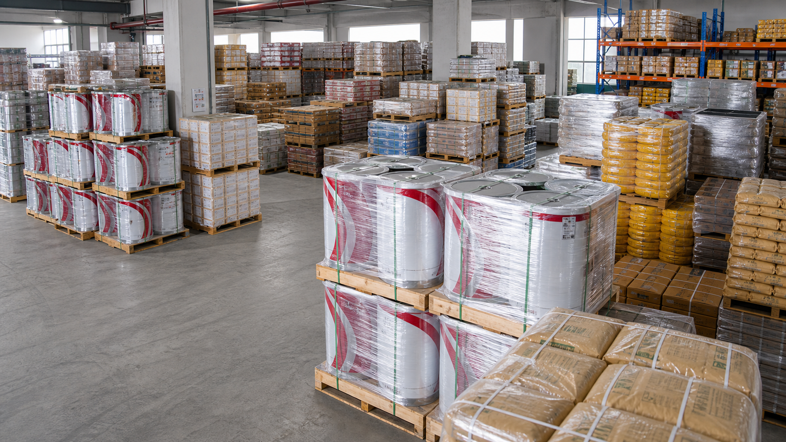

- 26年
- 专业批发经验
- 省内领先
- 供货规模
- 96小时
- 浙江区域正常送达
About
焊材、设备、配件辅料与五金工具，一站式配齐。
宁波志凡焊材有限公司位于宁波市鄞州区富宁路119号，代理天津金桥、上海大西洋、上海东风、天泰、常州运河、亚泰、隆兴割炬、上海通用电焊机等品牌。
Authorized Brands
授权品牌
长期代理主流焊材与焊接设备品牌，支持现货供应、资料配合与项目保供。

上海大西洋焊材
上海东风焊材
常州运河焊材亚泰焊材隆兴割炬上海通用电焊机
Products
产品中心
高频品类常备库存，按品牌、规格和项目计划进行保供。图片风格参考实仓库存：桶装焊丝、焊条纸箱、焊剂袋与托盘膜包装。

实芯气保焊丝
约1500吨常备，适用于钢结构、装备制造和连续焊接产线。
药芯气保焊丝
约800吨常备，兼顾效率、成形质量和现场适应性。
埋弧焊丝焊剂
约600吨常备，服务厚板、筒体、管道和大型构件。
不锈钢焊材
约250吨常备，覆盖常见不锈钢焊接与耐腐蚀工况。
铝焊丝与特种焊材
铝焊丝约30吨常备，并配套耐磨、耐热、异种钢材料。
设备配件与工具
电焊机、割炬、辅料、配件及常用五金手动工具。
Cases
案例及相关业绩
客户名称和精确吨位已脱敏，仅保留行业、供应规模和服务方式。

工程项目保供
提前锁定常用规格，专门小组跟进库存、发货、资料和异常响应。
区域快速配送
宁波地区正常48小时内，浙江全区域正常96小时内送达。
跨省发运
覆盖江浙沪及周边省区，可按需发往指定地点或偏远省区。
舟山区域大型船舶制造客户
年度供货规模：千吨级。配套实芯焊丝、药芯焊丝、埋弧焊丝焊剂及结构钢焊条。
宁波及周边船舶客户群
年度供货规模：500吨以上。按生产计划进行多品牌焊材组合与分批配送。
浙江装备制造客户
年度供货规模：数百吨级。以碳钢实芯焊丝、低合金焊材和配套辅材为主。
区域工程配套客户
年度供货规模：200吨以上。提供常用焊条、实芯焊丝和品牌替代建议。
Knowledge
焊接操作
根据采购、选型和现场问题的重要程度排序，优先展示能最快帮助客户明确型号、工艺和风险的内容。

01
焊材选型通用原则：先定母材，再定工艺，再定牌号
先定母材，再定工艺，再定牌号，避免只按品牌或单一型号采购。
阅读全文 02最常见碳钢类、不锈钢类匹配表
适合快速沟通常用母材、焊材类型和替代方向。
阅读全文 03典型行业场景的金桥焊材推荐
围绕钢结构、工程机械、桥梁、水电、储罐等场景建立选型入口。
阅读全文 04实心焊丝焊材匹配：碳钢和低合金钢的主力方案
碳钢和低合金钢的主力方案，是高频采购与库存备货基础。
阅读全文 05药芯焊丝焊材匹配：从强度、保护气体和焊接位置选
从强度、保护气体和焊接位置判断，兼顾效率与成形。
阅读全文 06埋弧焊材基础：焊丝和焊剂必须成套看
焊丝和焊剂必须成套看，适合厚板、长焊缝和大型构件。
阅读全文 07不锈钢焊材匹配：304、316L、双相钢和异种钢
覆盖304、316L、双相钢和异种钢，重点关注耐蚀与裂纹风险。
阅读全文 08高强钢和耐候钢实心焊丝匹配
强调强度、韧性、预热及施工工况的综合匹配。
阅读全文 09焊材烘干、保管与现场发放
减少受潮、错发和现场缺陷，是仓储与施工管理的基础。
阅读全文 10常见气保焊焊接缺陷与解决
从气孔、成形、飞溅、裂纹等问题定位保护气体和参数原因。
阅读全文 11药芯焊丝使用要点：气体、干伸长、电压和层间温度
重点看气体、干伸长、电压和层间温度。
阅读全文 12埋弧焊丝匹配：风电、水电、桥梁、储罐的常用组合
适用于风电、水电、桥梁、储罐等常用组合判断。
阅读全文 13常见埋弧焊焊接缺陷与解决
围绕焊剂状态、坡口、焊速和热输入排查。
阅读全文 14不锈钢焊接缺陷与工艺控制
关注晶间腐蚀、热裂纹、气孔与层间温度。
阅读全文 15焊接是什么：把两块金属变成一个可靠接头
用通俗方式解释可靠接头形成过程，适合作为入门基础。
阅读全文Capability
资质与服务
一级经销资源、充足现货库存和区域物流能力，共同支撑稳定交付。仓库背景采用实景参考与蓝色渐变处理，突出真实库存能力。
26年焊材专业批发经验
省内领先浙江省内供货规模
3200吨常备焊材库存上限
一级多品牌全国经销商
全过程技术支持
技术工程师与客户经理配合，提供参数说明、现场指导、调试和使用问题处理。
质量问题快速处理
质保期内质量问题立即响应，48小时内派专人到现场，并按要求配合更换。
紧急保供机制
安全库存、备选货品、多元物流和快速响应小组，应对突发订单与运输异常。



Contact
联系我们
提供品牌、型号、数量、收货地址和到货时间，我们将安排专门负责小组对接库存、报价和配送。